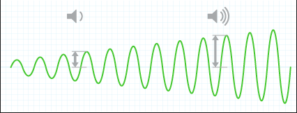
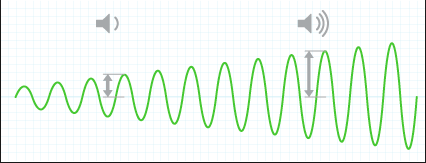

Lyd
----
Lyd er kjappe endringer av trykk, altså kalla lydbølge. lyd kan spreie seg i både vatn og faste stoff, men til vanlge er det lyd som spreier seg i luft vi hr å gjerer med, den lyden kan vi høyre. skal vi behandle
Lyd er kjappe endringer av trykk, altså kalla lydbølge. lyd kan spreie seg i både vatn og faste stoff, men til vanlge er det lyd som spreier seg i luft vi hr å gjerer med, den lyden kan vi høyre. skal vi behandle
